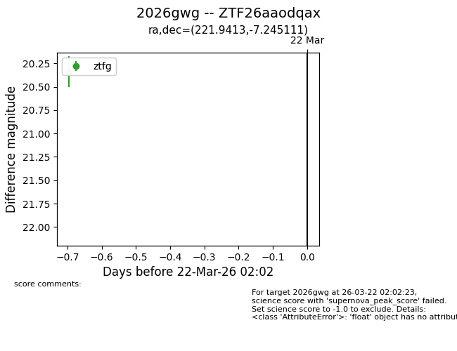
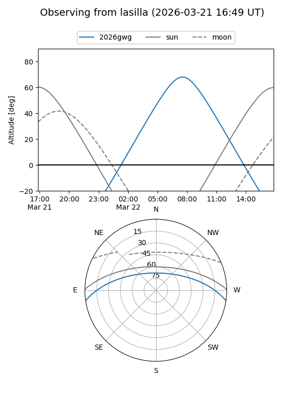
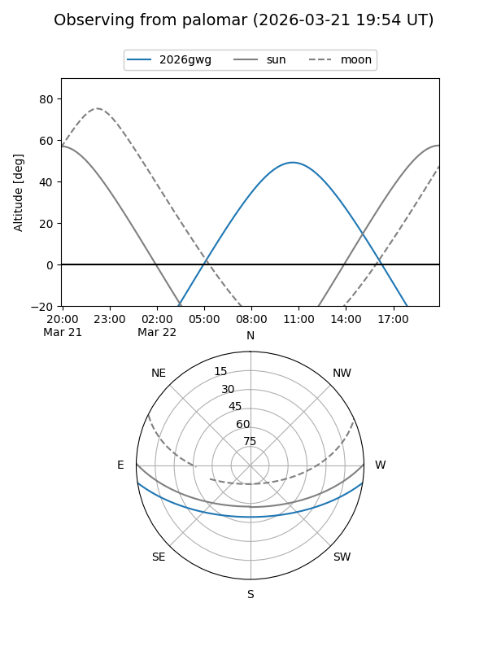
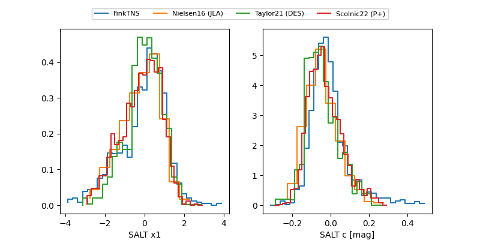

2026gwg
Target 2026gwg at 2026-03-22 02:04
Aliases and brokers:
FINK: link
Lasair: link
ALeRCE: link
TNS: link
YSE: link
alt names
ZTF26aaodqax (ztf,fink_ztf)
2026gwg (tns,yse)
Coordinates:
equatorial (ra, dec) = 221.9413,-7.24511
equatorial (HMS+DMS) = 14:47:45.91,-07:14:42.40
galactic (l, b) = (346.4631,+45.56687)
Flags:
Photometry:
last ztfg=20.34
1 ztfg detections
Lightcurve

Visibility


Additional plots
